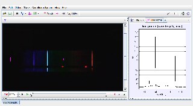

Tracker Experiment
This is the spectrum of a Hydrogen gas lamp with HeNe red (633nm) and green (543 nm) laser spots for calibration.
Analysis:
- Measure the visible wavelengths of H and estimate their uncertainty.
- Compare the measured values with those predicted by quantum mechanics. For which lines, if any, is the discrepancy significantly larger than the uncertainty?
- Why is the violet line relatively dim? What determines the relative intensities according to quantum mechanics? Why is the red line not the brightest in the image of the spectrum?
Author: Douglas Brown
Contact: dobrown@cabrillo.edu